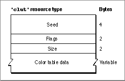

The Color Table Resource
You can use a color table resource to define a color table for a pixel pattern or an indexed device. To retrieve a color table stored in a color table resource, use theGetCTablefunction described on page 4-83. A color table resource is a resource of type'clut'. All'clut'resources should be marked purgeable, and they must have resource IDs greater than 128.This section describes the structure of this resource after it has been compiled by the Rez resource compiler, available from APDA. However, you typically use a high-level tool such as the ResEdit application, also available through APDA, to create
'clut'resources. You can then use the DeRez decompiler to convert your'clut'resources into Rez input when necessary.The compiled output format for a
'clut'resource is illustrated in Figure 4-17.Figure 4-17 Format of a compiled color table (
'clut') resource
The compiled version of a'clut'resource contains the following elements:There are several default
- Seed. This contains the resource ID for this resource.
- Flags. A value of $0000 identifies this as a color table for a pixel map. A value of $8000 identifies this as a color table for an indexed device.
- Size. One less than the number of color specification entries in the rest of this resource.
- An array of color specification entries. Each entry contains a pixel value and a color specified by the values for the red, green, and blue components of the entry.
'clut'resources for Macintosh computers containing 68020 and later processors. There is a default'clut'resource for each of the standard pixel depths. The resource ID for each is the same as the pixel depth. For example, the default'clut'resource for screens supporting 8 bits per pixel has a resource ID of 8.Another default
'clut'resource defines the eight colors available for basic QuickDraw's eight-color system. This'clut'resource has a resource ID of 127.